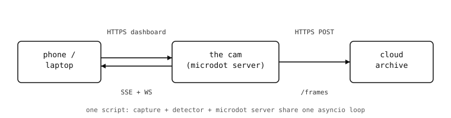

10. Web 伺服器¶
網路章節讓相機連上了網路，並給了它可用來通訊的 socket（網路）。接下來呢？大多數相機應用歸結起來不外乎兩件事——把相機所見的東西公開給世界，以及 對網路上其他東西所說的話做出反應。HTTP 就是這種對話發生的方式，而且它在兩個方向上都行得通：
作為 伺服器，相機回應來自手機、瀏覽器以及網路上其他裝置的請求。
microdot框架就是相機的伺服器。作為 用戶端，相機向外連到雲端服務以進行上傳、擷取或協調。
requests模組就是相機的用戶端。
在接下來的 14 個章節中，我們會建構 一個 同時運用這兩者、可實際執行的相機應用。
一台 後院動作觸發相機 立在院子裡的桿子上，觀察周遭發生的事，並把任何有趣的狀況告訴主人。我們會把這台相機從一個只有單一路由的「我還活著」伺服器，逐步發展成一個可出貨的成品：對主人手機的即時預覽、一個帶有閾值滑桿與事件紀錄的儀表板、動作觸發時的推播通知、登入、HTTPS，以及把每張觸發影格存進雲端封存。
每一章都新增 一個 功能。程式碼範例假設先前章節的內容都已就位——我們不會每次都重新貼上整份指令碼。
